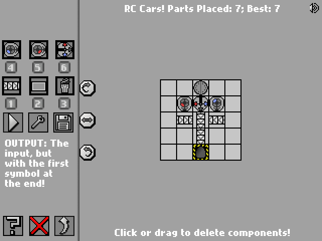
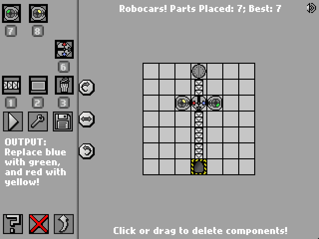
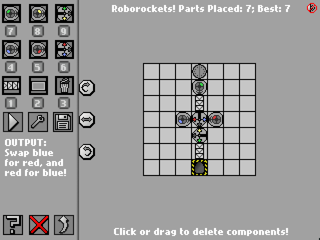

Introduction
Manufactoria is a Flash game where the player needs to manipulate incoming strings according to certain rules. Each level has new criteria which the strings must adher to. Only strings which fulfill should be released as output at the end - all others must be discarded en route. The easiest way to understand is simply to try for yourself here
On this page, I provide my solutions for problems I have managed to solve so far.
Level 1

Level 2
Level 3

Level 4

Level 5
Level 6

Level 7

Level 8
Level 9
Level 10
Level 11
Level 12

Level 15

Level 17

Level 21
My Logic
The underlying idea here is to view valid strings as having exactly 3 distinct segments appearing in the order BRB. The segments can vary in length as long as they all have the same number of dots as each other (in their respective colour). Strings which should fail include any which:
- have more than 3 segments (eg BRBR)
- don't start with blue (eg RBR)
- have any one of the segments containing a different number of dots from the other segments eg [bbb, r, bb]. NB this includes any segment not appearing at all (ie having 0 dots) when the other two segments still appear.
Incorrect strings may indeed successfully traverse the cycle a certain number of times, but as soon as one segment has been completely erased and at least one of the other segments still remain, the string will be removed from the conveyor. Eg cycle-by-cycle [bbb,rrr,bb] would yield => [bb,rr,b] => [b,r, ] => FAIL. Only strings which have all 3 segments simultaneously reduced down to length 0 during the same cycle will finally be allowed to proceed to the end as satisfactory inputs!
Level 25
Level 26